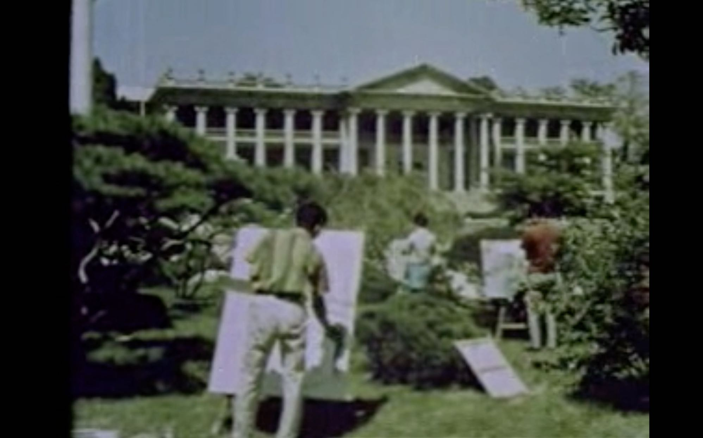
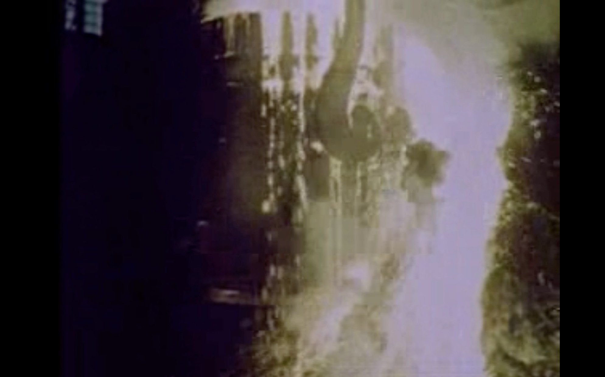

Last summer, while eating in a Korean restaurant, I felt awkward. The space was open so that one could see it at one glance, and white neon lights were installed at the high ceiling. The clerks were sweating and busy, and the customers were eating ‘hard’ and quick. More, the owner of the place was watching all of this from the counter at the entrance. I suddenly had a deep impression of being inside a certain type of factory, a food factory, and I was one essential part of it. It was reminiscent of Korea’s fast-fast culture(빨리빨리 문화)
‘Routine speediness runs through South Korean society and is especially prevalent in the capital. There is even a term for it: ppalli-ppalli culture. Translating to ‘fast’ or ‘hurry’, ppalli is pronounced with a tensed first consonant, as if snapping the vocal apparatus like a rubber band.
The ppalli-ppalli tendency can be seen in South Korea’s world-leading internet speeds, intensive language classes promising near-immediate results and popular speed-dating events. And just as time-conscious are the glitzy wedding halls that host a succession of hour-long ceremonies all weekend.
Ppalli-ppalli is also the watchword of the thousands of food delivery motorcyclists who bend the rules of traffic – and physics, too, it appears – to deliver their orders post-haste. To compete, McDonald’s, the global leader in fast food, began assembling its own fleets of delivery scooters in South Korea in 2007.’ -BBC, 2018
This is how BBC News described Korea’s ‘the fast-fast culture(빨리빨리 문화)’ I was curious about not only these superficial phenomena, but also the underlying causes behind them.
In my thesis I investigate where and how the fast-fast culture(빨리빨리 문화) began and how it has continued. And by examining the visual environment surrounding the clarity and efficiency represented by the fast-fast culture(빨리빨리 문화), it explores the relationship between modernization and social control in Korean society.In here, fast-fast culture(빨리빨리 문화) refers to a perception that prioritizes improving productivity through competition and thereby maximizing efficiency.
Korea was highly effected and destroyed during the Japanese occupation, and both the aftermath of this colonial era and the Korean War. After the war, the Korean government implemented a modernization project to modernize the country and implement radical policies, dreaming of unification as a means of surviving as a now divided country. At that time, the president, Park Chung-hee expected unification to be in modernization. The road to modernization was economic independence and independence was the first step to unification. He pursued the national reconstruction project with the goal of ‘relieving the backward country by securing the legitimacy of the development dictatorship through modernization.’ Therefore, modernization and dictatorship in Korea are closely related.
With ‘clarity’ I refer to that can be interpreted in several meanings. It is a concept that can be replaced with clean, no-frills, simple, easily understandable, monotone, etc. This concept can be understood by examining how the dictatorship government transformed and planted various visual languages throughout society to control Korean society. They control society through uniform products and buildings using materials that can be mass-produced. They use black and white logic to spread strategies that help them maintain their government. It easily controls society by simplifying the elements that make up the overall environment of society, such as material, environment, and perception, with the keyword ‘clarity’. Clarity was used as a powerful weapon of the dictatorial regime in Korea, and its traces still remain throughout Korean society.
Clarity as artificial light
In Korea, terms and values such as competition, productivity, efficiency, etc. have increasingly become the most important keywords to achieve modernization, and among the existing cultural styles, things that do not correspond to these, i.e., unreasonable, non-objective, and hard to measure (In the western perspective), they were considered to be obsolete relics, shameful things, or superstitions that should be erased or hidden.
Because it was a nation-led development under the dictatorship, it was decided in a short period of time by the government’s judgment rather than through various discussions and social consensus. As a result, clarity has become the most important value.
In the 1960s and 1970s, Korean society was just changing from an agricultural society to a light and heavy industry society. At that time, the meaning of factory in Korea was not only a production facility that produces goods, but it is also the most important facility for advancing to a developed country, and it is an important means of producing a developed national image by notifying the international community of one’s technological capabilities. It should be recognized as a developed country or a country with development potential. This is because Korea can receive investment from foreign companies or borrow loans from other countries. Factories played a very important role as a driving force in Korea’s modernization.
https://voxeu.org/article/korean-heavy-industry-drive-1973Korea History Museum
Electricity was the most urgently needed element to maintain a heavy industry plant in the 1970s. In Korea, which was devastated after the war, electricity supply was not smooth, and as a result, electricity was often cut off. Unstable electricity supply was a major obstacle to the stable operation of the factory. In order to provide stable electricity supply, Korea built Korea’s first nuclear power plant in 1978. that nuclear power plant was the 21st in the world at the time, and it was the largest investment project in Korea’s construction history at the time. This is an indicator of whether the Korean government considered nuclear technology development and electricity production as important at the time. Since then, Korea currently has built 24 nuclear power plants, thus with this amount of plants the country ranks sixth in the world.IAEA PRIS (23.11.2021) This is a part that shows how consistently Korea is obsessed with electricity supply. from past to present. The most intuitive element to view electricity is lighting. Since the role of lighting in a factory is a matter directly related to work safety, a stable supply of electricity is an issue that is linked to worker safety, productivity, efficiency, and clarity.
“Of the various factory services which may contribute to the welfare and safety of occupants of workplaces, lighting is of high importance. A report of a five-year study by the Accident Prevention Advisory Unit of the Health and Safety Executive (UK) says that the most safety-conscious companies are those which tend to be commercially successful” Lyons, Stanley L. Handbook of Industrial Lighting.Kent: Elsevier Science, 2014. Print.
But lighting isn’t just for safety.
“Imagine you are a young person entering a school. This may be the series of events that unfolds: even before entering, you may be recorded by surveillance cameras that have the ability to zoom in and archive the footage that is taken; you may be required to scan an ID card that retrieves information about you and is able to track your whereabouts through a radio-frequency identification (RFID) system; you may pass through an upright metal detector; or have your body scanned, perhaps your face, iris, or palm, by a device that checks your biometric reading against a database of collected readings. […] The fortification of schools is primarily a business response to safety. Safety has become a commodity that is sold by security professionals whose purpose, after all, is to make money and to create profit for the security companies for which they work. While we may hear that security equipment is used in order to create a “safe environment” or, on the other hand, for “social control,” these claims miss a significant aspect of school fortification: that the installation of security equipment in schools is foremost a corporate transaction led not by people who can guarantee us safety, and not by tyrants imposing social control, but rather by business people who convince us that products they have for sale will give us peace of mind.” Schools Under Surveillance: Cultures of Control in Public Education. New Brunswick, N.J: Rutgers University Press, 2010. Print.
Just like the Korean government that justified its dictatorship under the pretext of economic development, many factories, schools, hospitals, and prisons with similar characteristics installed lights and constructed an environment adapted to monitor citizens and workers, an environment that could be monitored as such. A common argument to justify these measures was the safety aspect The idea seems to be where there is light there is no crime.
Fig 1.
Artificial light in another sense is a symbol of urbanization and modernization. Still, satellite images taken by NASA are often used as a means of making dramatic comparisons between North and South Korea. Fig1. If you look at the photo, you can see that Korea is generally shining around major cities. On the other hand, most of North Korea’s territory except Pyongyang is shrouded in darkness. It is used as an image that intuitively represents poverty in North Korea. As such, artificial lighting is still playing a role as a measure of the industrialization and urbanization of a country.
Clarity as material
In the 1970s, Korea went through industrialization and modernization, and changes occurred in the materials mainly used. From small objects such as spoons to huge structures.
Changes in kitchenware material
Traditionally, Korea, like other Asian countries, used wood material most frequently. Not only because it is easily available, but also because it is cheap. So, from tableware to building materials, most of them were made of wood or soil. Metal materials are expensive and difficult to obtain, and processing is also difficult compared to wood, so it was not suitable for general use by ordinary people. Although it was difficult for ordinary people to use, not all of them did not use metal-based household items. Korean royalty and nobility were often threatened with assassination. One of the types of assassination was lethal feeding. Poison intake is mostly mixed with food during meals. The royal family devised several methods to prevent death from poisoning. First, the maid had to taste the food to be served on the table in advance, and second, silver or brass tableware was used. Most of the poisons used at that time discolor silver due to chemical reactions when it comes into contact with the silver. It could determine whether food is poisonous or not through the discoloration of tableware.https://chopsticksreview.com/korean-chopsticks/
Silver and brass tableware became symbols of kitchenware used by the Korean royal family from 18B.C (Baekje Kingdom). The nobility and the rich also began to use metal tableware to show off their wealth.
Although the beginnings of metal kitchenware were silver and brass, the common people could not use such expensive materials. After Korea’s industrialization, stainless steel tableware, a similar material, became popular in Korea because even the poorer population could use it without burden due to its low price. It is sturdy and clean to use. And it shone brightly. Spoons, chopsticks, water cups, soup bowls, and dinner plates were quickly replaced with stainless steel products, and Korea began to sparkle all over the place.
The position of iron in Korea’s industrialization process
This can be seen as reflecting not only the convenience of the material, but also the symbolism of the material and the appearance of praising the metal and it can be further interpreted as being used as a propaganda tool. To find out more about this, it is necessary to talk about how important the development of heavy industry is in Korean society and how it was used for social control. First, Take a look at the video ‘Life of young Koreans in their 20s developing with the First and Second Five-Year Economic Development Plan’ produced in 1968 by the Korean National Film Production.Life of young Koreans in their 20s developing with the 1st and 2nd Five-Year Economic Development Plan, National Film Production Center, 1968. Video
In the video, one sees a woman working in a textile factory, she is operating a hydroelectric power plant, red molten iron is flowing from a furnace, and a factory worker is sweating while constructing a building or making a car are repeatedly shown. Smoke is constantly coming out of the chimneys of factories built of cement. A nuclear power plant is under construction. The camera traverses the beautifully manicured park and shows a harmonious family enjoying shopping in a department store, pulling a shopping cart.
 내용입력
Students paint on canvas a university building that is just over ten years old, “designed in the neo-classical style with ancient Greek columns and triangular gable walls.” Students lie on the grass in the garden and read books, and research is conducted in the science lab. Girls practice ballet as a group, and boys practice taekwondo.
a Korean form of martial arts, characterized by punching and kicking techniques, with emphasis on head-height kicks, jumping spinning kicks, and fast kicking techniques.
Through this video produced by the Korean government, we can guess what kind of ideal Korean society that the Korean government wanted at the time. The number of scenes related to heavy industry appearing in this propaganda video is an important indicator that can infer how the Korean government was treating heavy industry at the time.
 내용입력
By inserting and juxtaposing the image of a heavy industry factory among the images that accepted advanced culture (Ballet, department store, students practicing Western painting at a university built in a Western-style building style, laboratory research), It creates a visual language of Heavy industry as ‘Korea’s future’.
The relationship between South Korea’s industrialization and defense products
Modern propaganda used in South Korea in the 1960s and 1970s did not mean that North Korea should be annihilated by force.Jacques Ellul,Propaganda the formation of men’s attitudes1973.
The way Korea pursued was to achieve modernization through national industrialization and to make the country wealthy, thereby securing systemic superiority. Because Korea relied on the United States for most of its defense power. Also South Korea’s wartime operational control was with the United States, it was difficult to overthrow North Korea by force. Also, right after division, from 1950 to the early 1970s, North Korea had superior economic and national defense power over South Korea, so South Korea’s top priority was to develop national defense and economic power in order to prove its ideological superiority.UN
There were several reasons behind that goal. First, in the 1970s, the United States reduced military aid and even the size of the US Forces Korea decreased.When Nixon was elected president the biggest issue for the U.S. was how to end the Vietnam War. The war was tearing the country apart and putting a great fiscal burden on the U.S. So Nixon’s campaign pledge was to withdraw troops from Vietnam. The US, in accordance with the Nixon Doctrine, officially notified in July 1970 of its intention to withdraw one of its two Army divisions stationed in Korea.
Korea, which has relied on the US military for its defense, needs more independent defense than ever. Second, in 1968, North Korean special forces agents infiltrated South Korea, and there were a shooting and grenade detonation in Seoul. Since then, North Korea has continued to threaten South Korea. Korea’s heavy and chemical industry, which had to continuously manage such real threats, even though Korea was a ceasefire country, developed in close relationship with weapons development. Nuclear power plants were involved in the development of nuclear weapons, and private factories were involved in the manufacture of weapons in case of emergency. In Korea, developed on the basis of this, the defense industry leads to arms exports. In 2019, South Korea ranked eighth among the world’s arms export countries.SIPRI(Stockholm International Peace Research Institute)
This background was possible within the special circumstances of the ceasefire. As a result, the perception that individual rights and diversity can be limited for the public good has become common, and Korean society has become a dehumanized, large, factory-like society. All movements that challenge or resist the fast-fast culture designed under the leadership of the government will be suppressed within the frame of communist. Since then, fast-fast culture has become an important weapon for the government to achieve social control. And by using that weapon, the dictatorship has a lot of influence on maintaining power. In order to strengthen the internal solidarity, it was necessary to use the external enemy. The continuous expansion of the defense market constantly reminded Koreans of external enemies and made people learn the tension of a national emergency. ‘We are at war.’ ‘This is the only country in the world divided.’ Social consensus through debate and discourse is omitted because it takes too long to determine what is right or wrong. Don’t even dare to try to think yourself. Judgment and execution are the roles of the president and the government, who are the rulers of the military, and the people just need to follow along. In Korea, an emergency situation, the process of slowly forming something and reaching a social consensus sounded like high class problem. Every election season, the ruling party would emphasize the dangers of North Korea and the importance of national defense. At the same time, the communist frame was used to attack the opposition. Described as communists trying to sell the country to North Korea. The dichotomous political operation of the communist party if not on my side was very easy to understand and quickly learned. The people no longer had to think deeply and spend time and effort. Will you be with me or will you be my enemy? Will you become a docile citizen who does not rebel, or a villain who follows evil? Most of all, there were two options, and it seemed clear which one was the right one.
The most tangible results of Korean reconstruction after the war are architectures, including high-rise buildings made of cement. A prefabricated building is a symbol that can visually show off an industrial society, such as technological development, industrial advancement, and wealth concentration. Further, this symbol has the effect of visually showing off and persuading inside and outside the country that the post-war ruins of Korea are being rebuilt. One interesting thing. It is said that the city plan was designed with the role of deterring the movement of North Korean troops by blowing up apartments if the war starts.https://www.mk.co.kr/news/home/view/1994/09/48387
As a result, people’s living space was transformed into a weapon to deter North Korea in case of emergency and the people living in it were dehumanized. Nevertheless, it was effective in resolving the housing problem of the densely populated population, and Because of the symbols of display of high-rise buildings, many apartments are built as a new residential type in Korea. Prefabricated buildings with minimal decoration were able to be built quickly in a short period of time, making Korea urbanize in a short time.
The square concrete-dense buildings all had similar shapes and structures, and it was built with the motto of efficient use of space as the top priority not only for residential spaces, but also for schools, companies, factories and hospitals. This consistent lifestyle also affects the standardization of people’s consciousness. Urbanization in Korea means Korea turning into a single large factory or weapon, and can be read as a symbol of the loss of humanity.
Clarity as Display resolution
In the 1970s and 1980s, anti-communist films were most actively produced in Korea with the support of the government. However, if there was any possibility of misunderstanding the contents of the film, the film was immediately banned. Misunderstanding here includes portraying North Korea in any way as a human being, South Korean characters passing over to North Korea, sympathizing with North Korea, and so on. North Korea was usually portrayed as a villain, a wolf, and a dark and insidious force.Produced in 1978, the popular anime ‘General Toli’ is the story of a young boy who triumphs over North Korean soldiers who are portrayed as wolves and villains.
In other words, the government actively utilized the film industry as a tool for propaganda and delivered the message they wanted to convey. Until 1987, at the Daejong Awards, a Korean film awards ceremony, there was a separate category for ‘anti-communist film awards’.
When you went out after watching a movie and walked down the street, you saw anti-communist slogans and anti-communist posters hanging on the street. Not only that, but also enlightenment advertisement signs, propaganda flyers, and so on.
The motto was to inspire a sense of security that could be loosened by constantly reminding us of the existence of the main hostile, North Korean government, such as ‘Let’s beat the Communist Party’ and ‘Let’s smash the North Korean army’. At the same time, it was used as a manipulation tool to threaten the people. They were encouraged to report any suspicious behavior they see. It made them think that it was patriotic, and furthermore, constantly instilled the impression that it was for themselves. (Even as of February 2022, reports were received in Gyeonggi Province for the fact that photos of North Korea Chairman, Kim Il-sung were placed on the street and the police investigated the cause.)https://www.ytn.co.kr/_ln/0103_202202211120179489
it was helped to create a social atmosphere that values the group rather than the individual. In addition, this social atmosphere was mainly used by the government to suppress dissidents. people who were against all policies promoted by the government were identified with socialists who symbolized evil and this process became to affect people’s actions. For example, the act of protesting or forming a union to improve the poor environment in which workers working in industries promoted by the government were regarded as anti-government actions, and this came to be framed as socialists. regardless of whether they are real socialists or not. People became very reluctant to be falsely accused. For this reason, people who have been socialized in Korea regard it as instigation to express an opinion different from others or opposing their superiors and feel repulsed. People started to censor themselves.
The government’s social control can be found not only in anti-communism but also in other fields. According to the 1961 government meeting minutes, ‘Promotion of Family Planning.’ the government at that time cited population expansion as an impediment to economic growth and implemented a population reduction policy to resolve it.According to the documents of the Ministry of Health and Welfare at the time, the government’s population policy was treated as a secondary issue to achieve economic growth rather than focusing on population change itself.
This can be seen that the state’s policies are instrumentalized for the national economic growth, not for the quality of life of individual people, and Ironically, in that it has a totalitarian attitude, it can be said that it is in line with North Korea’s attitude toward its people.
The Korean government actively conducted campaigns using posters as a means of promoting these policies from the 1950s to the 1990s. Although it was produced with contents related to various fields such as anti-communism, family planning, economic development, environment, and industrial safety, the appearance of the poster did not change significantly despite the passage of time. you can find a similar layout, use of colors, and similarity of contents. The poster should be positioned with clearly separated text and pictures, and the slogan should be located mainly at the top and bottom to make it easier to read. Drawings are usually drawn with strong primary colors to make them stand out and be easily understood.
내용입력
The posters above are campaign posters made in 1970 and 1980’s. In addition to visual objects that can be seen on the street, elementary, middle, and high schools in the 70’s and 80’s promoted the government’s policies through ideological education. In art class, students were asked to draw campaign posters themselves, and regularly held writing contests, poster contests, oratory contests, etc. to instill government policies in the students. It means that most of the middle-aged and elderly people living in Korea now, 40 years later, have mostly advocated and visualized government policies in their childhood experiences of visual creation.
내용입력내용입력
The posters below are the winners of the poster contest for students in 2007 and 2019.
Even through this, we can see that, despite the changes from the past to the present, visual languages such as similar layouts, colors, shapes, etc., have been handed down over and over again for several decades. Visual language has a continuity from the past to the present, and students internalize the visual language designed by the government by reproducing the learned visual language.
 Fig 1.
Artificial light in another sense is a symbol of urbanization and modernization. Still, satellite images taken by NASA are often used as a means of making dramatic comparisons between North and South Korea. Fig1. If you look at the photo, you can see that Korea is generally shining around major cities. On the other hand, most of North Korea’s territory except Pyongyang is shrouded in darkness. It is used as an image that intuitively represents poverty in North Korea. As such, artificial lighting is still playing a role as a measure of the industrialization and urbanization of a country.
Fig 1.
Artificial light in another sense is a symbol of urbanization and modernization. Still, satellite images taken by NASA are often used as a means of making dramatic comparisons between North and South Korea. Fig1. If you look at the photo, you can see that Korea is generally shining around major cities. On the other hand, most of North Korea’s territory except Pyongyang is shrouded in darkness. It is used as an image that intuitively represents poverty in North Korea. As such, artificial lighting is still playing a role as a measure of the industrialization and urbanization of a country.
 내용입력
내용입력